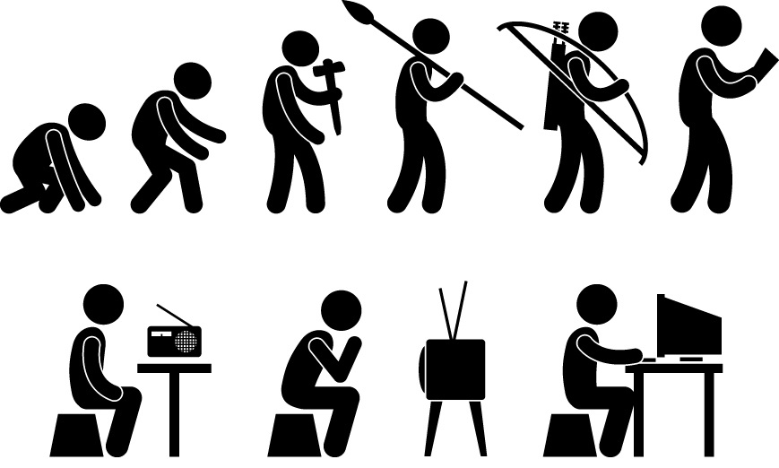
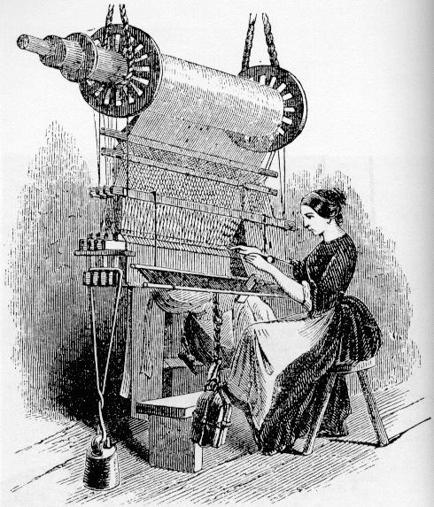

Notes From The Underground - V
Modernity cannot be identified with any particular technological or social breakthrough. Rather, it is a subjective condition, a feeling or an intuition that we are in some profound sense different from the people who lived before us. [Adam Kirsch (2016)] 
The quantum protectorate describes a stable state of matter whose generic properties are determined by a higher organising principle and nothing else. The very large number of atoms present in real bits of matter lead to fundamentally new types of behaviour which are not just simply the properties of an individual atom multiplied by the number of atoms. Different behaviour occurs when you have more.  (2013)
Make two marks on your mirror on a level with your eyes, and think of them as two human eyes looking into yours.
Do not move your head, but stand erect. Concentrate all your thoughts on keeping your head perfectly still.
Do not let another thought come into your mind. Then, still keeping the head, eyes and body still, think that you look like a reliable man or woman should; like a person that anyone would have confidence in.
While standing before the mirror practice deep breathing.
The one that stands up like a man and has control over the muscles of his face and eyes always commands attention.
Also, sit in a comfortable chair and see how still you can keep.
This is not as easy as it seems.
You will have to center your attention on sitting still.
Watch and see that you are not making any involuntary muscular movements.
By a little practice you will find you are able to sit still without a movement of the muscles for fifteen minutes.
At first I advise sitting in a relaxed position for five minutes.
After you are able to keep perfectly still, increase the time to ten minutes and then to fifteen.
This is as long as it is necessary.
But never strain yourself to keep still.
You must be relaxed completely.
The Art of Manliness (2012)
Alexey Kondakov takes figures from classical paintings and drops them into modern-day Kiev. Fubiz (2015)